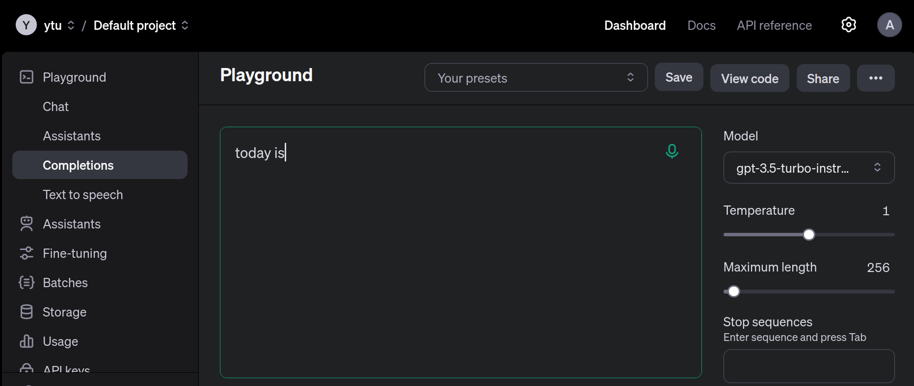
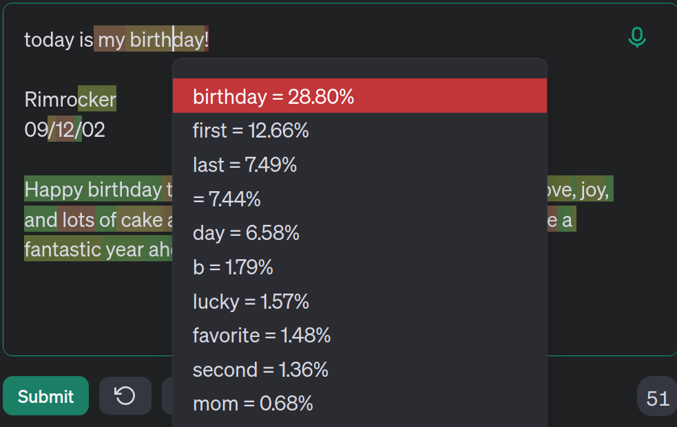
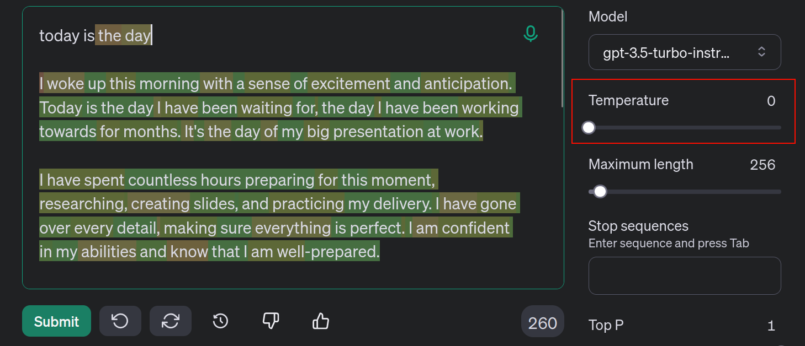
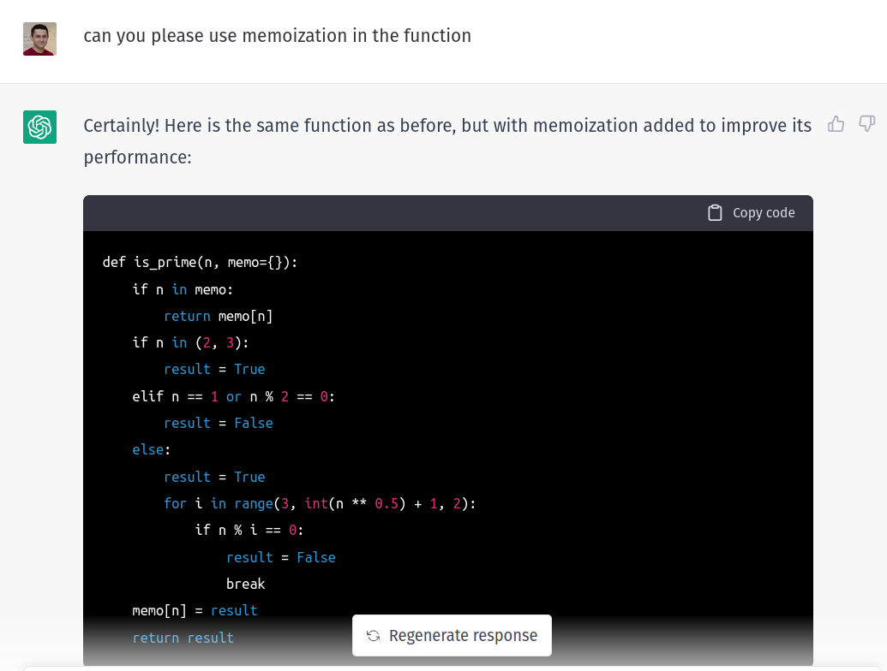
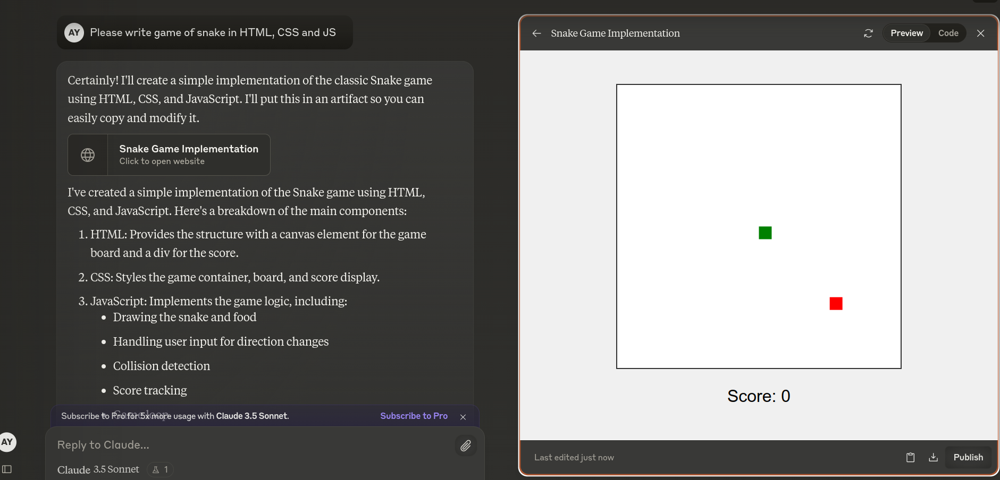
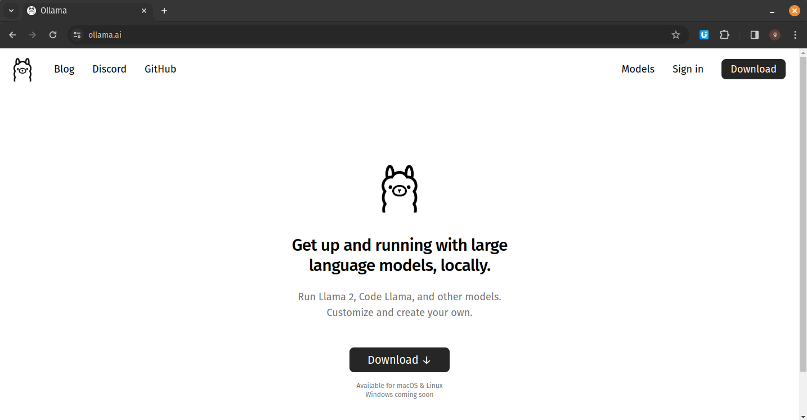
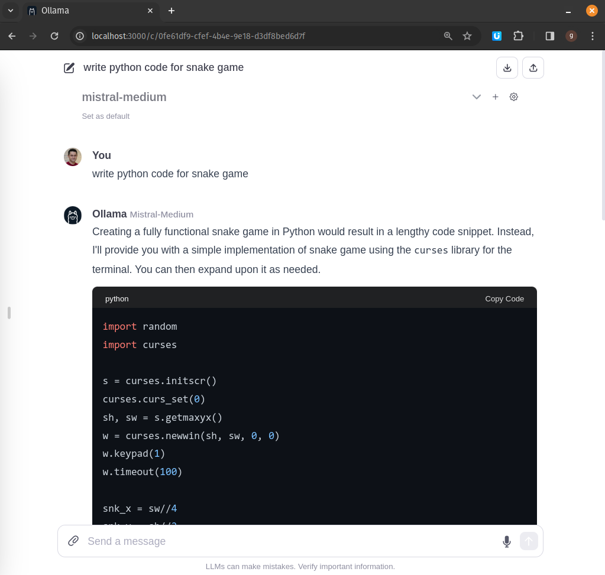
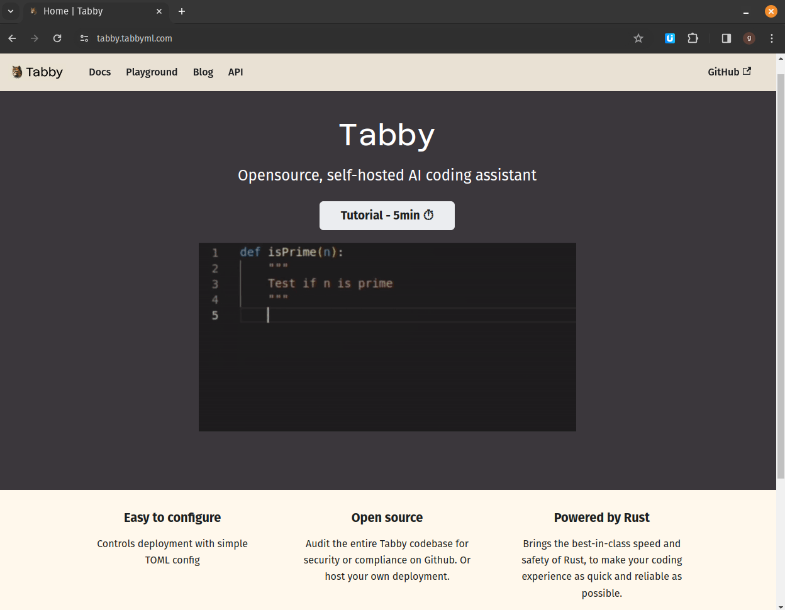

def is_prime(n, memo={}):
if n in memo:
return memo[n]
if n in (2, 3):
result = True
elif n == 1 or n % 2 == 0:
result = False
else:
result = True
for i in range(3, int(n ** 0.5) + 1, 2):
if n % i == 0:
result = False
break
memo[n] = result
return resultGPT models
GPT1, GPT2 abd GPT3 were released couple years before ChatGPT and it was able to complete sentences. Please visit “How Does ChatGPT Work?” site for more information. After ChatGPT was released, large language models got “conversational”
Please visit OpenAI Playground completion site and select “gpt-3.5-turbo” as model. Type a incomplete sentence and then press Submit button.

You’ll see that the model will complete your sentence. If you turn on the “Show probabilities” option on right menu, you’ll get a glimpse of how GPT works.

If you complete the sentence and then hover over the words, you’ll see that the model had many words to chose from with certain probabilities. In this example, “my” is the 4th most probable word after Today is and “birthday” is most probable word after Today is my.


One of key settings of GPT models is temperature. If you decrease the temperature the model will choose the most probably words. If temperature is high, the model will be picking words with low probabalities, which will bring creative and diverse output.
If you decrease the temperature to zero, the output will be always same.

ChatGPT - no need to code anymore?
ChatGPT is released in December 2022 and it has taken the online world by storm. There are lots of blog posts, YouTube videos about it. Because of that Google is worried and is shifting its workforce to AI research and some people are worried that chatGPT will bring an end to software engineering.
So, let’s dive in to the world of ChatGPT. Please note that you need an account at OpenAI to do queries at ChatGPT site.
If you did some coding during our lecture, you probably searched online for a solution or even truobleshooting for an error message. In that case you most likely ended up at StackOverflow site where developers/programmers are asking for help.
In our earlier lectures, we have searched for fastest prime number if you type “fastest prime number function in python” in Google, you’ll get something like this:
As you have noticed there are lots of results from StackOverflow. However; * If you check the dates on the results, some of them date back to 2011. In that page, you might have an example code from Python 2, which will likely to fail. * Some results are focused on “prime numbers up to N” and others are checking for primeness. So, the results are not customized for you. * Also, in another page you might have a sample code which might be wrapped within unnecessary code which will give error if you just copy/paste it.
ChatGPT writes code for us
Let’s ask ChatGPT for a fast prime number function in Python

Did you see what just happened! It provided code tailored for us and it also explained bits of the code. Have you noticed that the code contains the tricks we have learned during our lecture: * early stop: if a condition is met, return immediately True or False * instead of checking until N, we should check numbers until \(\sqrt{N}\) (n 0.5** in Python)
You can continue the conversation. Let’s ask for memoization.

Let’s get the code and test it here:
# is_prime(100000000003)<i class="fas fa-fw fa-exclamation-circle mr-3 align-self-center"></i>
<b>Warning:</b> At the time of writing this note (January 2023) chatGPT is known to provide results which are not exactly true!<br>So, be aware and don't use code or information you got from chatGPT as is without checking or confirming. ChatGPT can fix or modify the code
You have a piece of code and it does not work as intended? Then you can ask ChatGPT to fix the code.
Let’s provide a code with error and ask chatGPT to debug it:

So, ChatGPT can fix code! By the way, did you know that I used ChatGPT to prepare that example ;)

Is it the end of programming?
You might think, “we learned Python for a semester and but now there’s ChatGPT, no need to learn coding at all!”. You might find content online which are exploring similar concerns. But more sane approach is “AI tools will increase speed and efficiency of developers also will decresase barriers to entry for new languages.
The section below is taken from Github Copilot’s page: 
Thanks for showing us ChatGPT, I can now prepare my homeworks easily!
Seeing the capabilities of ChatGPT might give some hint about misuse. First of all, a homework is for you to learn a concept (remember the playing the guitar analogy?) so being involved in AI-assisted plagiarism is still a plagiarism and a loss on your side. (please also check the file 00-academic-integrity.ipynb for adverse effects of plagiarism)
Second of all, OpenAI and others are working on tools and ways to include watermarks in ChatGPT output so that it can be spotted easily.
So, please be inspired by this tool, use it to augment your learning but do not use it for plagiarism.
Large Language Models
ChatGPT and beyond
Closed and Open models
Currently there are several closed-source large language models which are developed by major corparations each took hundreds of millions to train * GPT3.5 (ChatGPT) and GPT4 by OpenAI * PaLM and Bard by Google * Claude by Anthropics
Access to OpenAI models
There are large language models which are proprietary. You have free access to ChatGPT. There’s paid access to GPT4 over OpenAI website.
You can also access GPT4 and DALL-E 3 through Microsoft CoPilot Android App. The app allows text and image input and output.


LLMs as good as GPT4
Claude 3.5 Sonnet by Antropic
Claude 3.5 is the latest version of Claude model. Antropic releases Claude in three sizes Haiku (smallest), Sonnet (medium) and Opus (largest). Currently, Claude 3.5 Sonnest is the best LLM. Generally Claude is good at creative writing but with the latest release it excels at coding as well. Also, Claude allows preview of the code (web-based) on right panel.
Below is as example where Claude 3.5 Sonnet was prompted “Please write game of snake in HTML, CSS and JS”. You can actually play the game!

Claude also allows uploading documents (e.g. PDF) and asking questions about the document.
You can use Claude (with some limitations) at https://claude.ai/chat after registering an account for free.
Gemini by Google
Gemini is actually an LLM with online search capacity. Also, you can download documents (via Google Drive) or point to YouTube videos to ask questions. Finally, Gemini has the longest context window of 1 million tokens (will fit around 10 books at once).
Open source models
You can not run ChatGPT or GPT4 locally on your computer (you can have API access though).
- OpenAI does not share the model weights
- Even if you have weights, you need an expensive computer to run it.
Tech giants kept LLMs behind walls. However, in February of 2023, Meta (formerly Facebook) released LLAMA model. This sparked release of open source models. Initial language models were large but then smaller language models were released. These language models can be run in a laptop, locally!
Please check the open source LLM leaderboard. As of writing this text, models from Mistral.ai were very promising and Mixtral model was evaluated as good as ChatGPT although it’s much smaller.
You can test LLAMA, Mistral models at Perplexity AI site.

About Perplexity AI (https://www.perplexity.ai/): Perplexity AI is a chatbot-style search engine that allows users to ask questions in natural language and receive accurate and comprehensive responses. The platform uses AI technology to gather information from multiple sources on the web, including academic databases, news outlets, YouTube, Reddit, and more. Perplexity AI then provides users with a summary containing source citations, enabling them to verify the information and dive deeper into a particular subject. Perplexity AI is a versatile tool that can assist various professions like researchers, writers, artists, musicians, and programmers in multiple tasks such as answering questions, generating text, writing creative content, and summarizing text. Advantages of Perplexity AI: * Provides fast and comprehensive answers to complex questions * Helps users learn new things and explore different perspectives * Improves users’ critical thinking and research skills by showing them the sources of the information
Running models locally
Since developers share the model weights, it’s possible to download and run the models locally. There are various sizes of models. 7B (7 billion) models require around 4Gb memory, so you can run them in your laptop.
You can run the models by installing PyTorch and some other libraries for Python and then writing some Python code. Or you can install Ollama and then run any compatible model with it.
Advantages of running a model locally: 1. Less Censorship 2. Better Data Privacy 3. Offline Usage 4. Cost Savings 5. Better Customization
Disadvantages of running a model locally: 1. Resource Intensive 2. Slower Responses and Inferior Performance 3. Complex Setup
Running a model locally using Jupyter notebook or Google Colab
You can actually run LLM models in Jupyter notebooks. However the process will require you to install lots of Python packages, downloading the model weights and then writing some Python code to ask questions to the model and then capturing the answer in a dictionary. Although there are some solutions for “chat-like” experience, the experince is more like “one-shot question and answer”.
Please check the Youtube video which describes the process in Google Colab, where Google provides GPU (or TPU) to run the model in a Jupyter notebook environment.
Running a model locally with Ollama

Please visit the list of models page to have an idea about specialized models. With Ollama, you can download and use any of those models.
In the terminal, let’s list available models
$ ollama list
NAME ID SIZE MODIFIED
deepseek-coder:6.7b 72be2442d736 3.8 GB 5 weeks ago
neural-chat:latest 73940af9fe02 4.1 GB 5 weeks ago
orca2:7b ea98cc422de3 3.8 GB 5 weeks ago
phi:latest c651b7a89d73 1.6 GB 14 hours ago
solar:latest 059fdabbe6e6 6.1 GB 2 hours ago
stablelm-zephyr:3b 7c596e78b1fc 1.6 GB 3 weeks agoLet’s run Phi-2 by Microsoft. Here’s info about Phi-2:
a 2.7 billion-parameter language model that demonstrates outstanding reasoning and language understanding capabilities, showcasing state-of-the-art performance among base language models with less than 13 billion parameters. On complex benchmarks Phi-2 matches or outperforms models up to 25x larger, thanks to new innovations in model scaling and training data curation.
$ ollama run phi:latest
>>> why sky is blue?
The sky appears blue due to a phenomenon called Rayleigh scattering. When sunlight enters the Earth's atmosphere,
it collides with molecules and tiny particles in the air, such as oxygen and nitrogen atoms. These collisions cause
the shorter wavelengths of light (blue) to scatter more than the longer wavelengths (red, orange, yellow, green, and
violet). As a result, our eyes perceive the scattered blue light to be dominant, which is why the sky appears blue to us.As you can see, a small model, which can answer questions, help coding can be run locally.
Running a model locally with user interface
Ollama Web UI

LLM Studio
You can install LM Studio and then interact with local models with its user interface

Coding with LLMs
Github CoPilot
%%HTML
<iframe width="560" height="315" src="https://www.youtube.com/embed/ZapdeEJ7xJw?si=3DYWvMa7uudDhUnj" title="YouTube video player" frameborder="0" allow="accelerometer; autoplay; clipboard-write; encrypted-media; gyroscope; picture-in-picture; web-share" allowfullscreen></iframe>Free Github CoPilot alternative
Cody is Sourcegraph’s AI coding assistant, and it has a couple of features that no other assistant has to make you a 10x developer. You can check it out here: https://sourcegraph.com/cody
Open source local alternatives
Please visit https://tabby.tabbyml.com/ for more information

Prompt engineering
For better results we should provide carefully crafted prompts to LLMs. OpenAI documentation about Prompt engineering provides tricks and tips about better prompts. Please visit the Prompt Examples page for diverse examples.
https://prompts.chat/ has extreme examples, where ChatGPT is asked to behave like Excel or Linux terminal
from IPython.display import YouTubeVideo
YouTubeVideo('8I3NTE4cn5s', width=800, height=450)Fine-tuning
Fine-tuning a Language Model (LLM) refers to the process of taking a pre-trained language model and further training it on a specific task or domain with a smaller dataset. Fine-tuning allows you to adapt the pre-trained model to a more specialized task or domain, leveraging the knowledge it gained during the initial training. This process is particularly useful when you have a specific language-related task or a dataset that is related to a specific domain, and you want the model to perform well in that specific context.
The steps for fine-tuning typically involve taking the pre-trained model, modifying the last layers or adding task-specific layers, and then training the model on the task-specific dataset. Fine-tuning can lead to better performance on the targeted task, as the model has already learned general language patterns and can build upon that knowledge for the specific task at hand.
Fine tuning might require a GPU depending on the LLM you are training. Also, if you have rapidly changing domain knowledge then fine tuning is also needed to be performed regulary, which is expensive and cumbersome.
Retrieval Augmented Generation RAG
Chat with your documents

image source: Tarek AbdelKhalek
Agents
AI agents are frameworks or entities that are designed to perform tasks autonomously using Large Language Models. These agents are capable of perceiving their environment, making decisions, and taking actions to achieve specific goals. The term “agent” emphasizes the idea that these entities can act on behalf of a user or a system, often with a degree of autonomy.
- chatdev: Personalize your AI town
- crew.ai: Framework for orchestrating role-playing, autonomous AI agents
- Microsoft Autogen: Enable next-gen large language model applications
In extras folder, there are examples for Autogen and CrewAI agent frameworks
Modes other than text
Gemini from Google and GPT4 from OpenAI are multimodal. They support vision and text. And expected to support sound, video etc. soon
Image generation
DALL-E 3 by OpenAI
Prompt: “a dna strand with istanbul city as silhoutte in background”
Revised prompt: “Imagine a detailed science meets architecture illustration. In the foreground, there’s a strand of DNA, magnified and glowing against a dark backdrop. This helix structure is precisely depicted, its familiar double-helix shape twisting majestically. Intertwining with this scientific image, in the background, there’s a silhouette representation of Istanbul city. The skyline shows off its marvelous historical architecture, including its domed mosques and towering minarets. The cityscape sits against a dusky eveningsky, the setting sun casting an orange glow on the horizon behind the buildings. The combination results in a fascinating juxtapositionof science and urban beauty.”
Result:

Midjourney v6
Midjourney announced v6 in December 2023. It can generate photorealistic images. Normally, you need to use their Discord channel to generate images free. Also, you can generate images using getimg.ai. I tried generating images using the following prompts
- Molecular biology lab with lots of students.
- Beautiful sea side with white sand beach and tropical trees on shore. The sea looks greenish blue
The results are great:

Disinformation
Be aware of deepfake or AI-generated fake photos
Fake Trump Photo

Fake Pope Photo

Video generation
Prompt to video
- RunwayML Gen-2
- Pika
- Stable Video Diffusion by Stable Diffusion
- GENMO
Image to video
Music or sound generation
- Elevenlabs can convert text to speech online for free with our AI voice generator